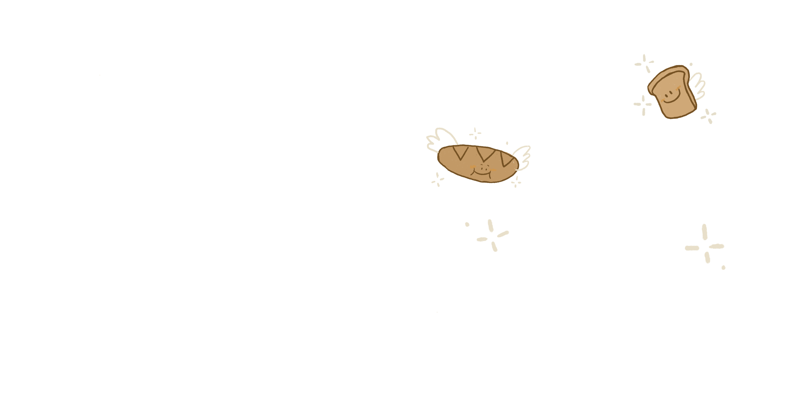
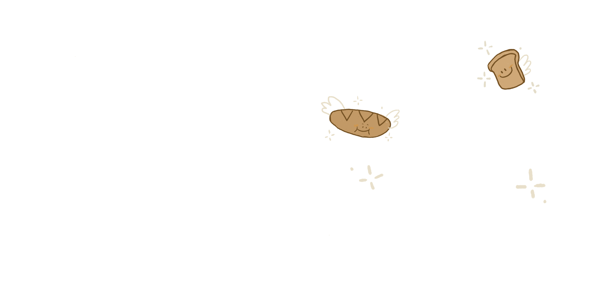

Happy Birthday, Liuyizhou! ;^)
对我来说，打字写信真的是一个非常不习惯的事情。电脑书写是我的习惯中被预留给逻辑表达的部分，我好像习惯了用笔记录下一些瞬间的想法和感觉。也不是说手写就不囊括思考的部分啦，但我觉得在那一时刻留下的不可修改的传递让我很有确定感，也更有在和人对话的感觉，所以我决定把这封电子书信变得更具有瞬时性，尽管难以避免有点文绉绉的语言，但是咱们绝对不回头看一遍！
我一向是个毛手毛脚的人，东西老是莫名其妙消失，回忆也会乱丢，装着回忆的很多载体也好容易被我搞不见。但庆幸的是，我有个会留存记忆和照片的男朋友^ ^ 而且我真的记得很多感觉，他们会在我的脑子里不停回播，保持着鲜活的感觉和样子。比如去年你生日的时候送了你个周杰伦磁带，你很开心，我也特别开心的时候；比如我和你在你家沙发上看权游第一集，看英文字幕根本看不懂，但是我和你离得特别近，我真的能听见我的心跳声；比如那天看完电影，我说我要去河边放烟花，你朝我跑过来的时候，我的心像浸泡在带气泡的酸梅汤，又像在坐跳楼机一样的无法描述的感觉；还有偶尔的鼻子酸酸，拼完土星五号的成就感，拍到星空的新奇，勇士夺冠后的超兴奋。幸好这些我能够一直记得，重新体验这些感觉还是觉得心软软的，如果我有尾巴的话也会使劲摇起来吧。跟你在一起的时间真的过得好快，尽管不在彼此身边的时刻有好多，但总是能感觉到你对我的喜欢和想念，所以好有安全感的！同样，我对你的想念也是既跳跃又很留长。
很难说“你让我成长了很多”这种像跟动画片里的死对头说的话，或许是因为觉得自己还没那么好，也或许是害羞！但我学会了一点点表达自己，也逐渐正视曾经不敢面对的部分自己和一些事情。虽然还有好多好多可以前进的空间，有时候也会难过彷徨，可你给了我好多好多的勇气，让我觉得我有时候也不赖。好感激你的包容，也越来越喜欢你啦！有一天洗澡的时候脑子里一直萦绕着田馥甄的「或是一首歌」，觉得歌词编曲和整个调调都有点像我对你的感觉，也很像我看世界的感觉吧。大概的意思也有点像爱德华跟温莉说的，“等价交换，把我的人生给你一半！”从来不觉得任何情感是等价交换，单纯觉得这句话很酷，也很喜欢这种把自己的一部分送给你，心贴着心，柔软地缠绕在一起长大的感觉，剩下的部分的自己踏着阳光探索世界，哇，不真的很浪漫又热血吗！虽然你一直很坚定地往前走，我难免摇摇摆摆犹犹豫豫，但是笨笨地曲线前进或许也是我的方式吧。嗯，会尝试更努力的！
已经不记得去年给你写的贺卡具体写的是啥啦，但是我感觉我对你的祝福一直不变。永远热血，坚定地做自己，踏出的每一步都会有收获的啦！希望你朝理想越来越近。也希望我们可以一起走过很多快乐的时光，有时候会想象很久以后的事情啊，虽然以后还看不到头呢。无论如何，快乐的感觉我都会记得，会狠狠收藏。遇到困难就来抱抱我噢。
生日快乐啦，我的小女孩！对我来说你真的很重要！
2022.11.18